Charleston SC Bachelorette Party Ideas
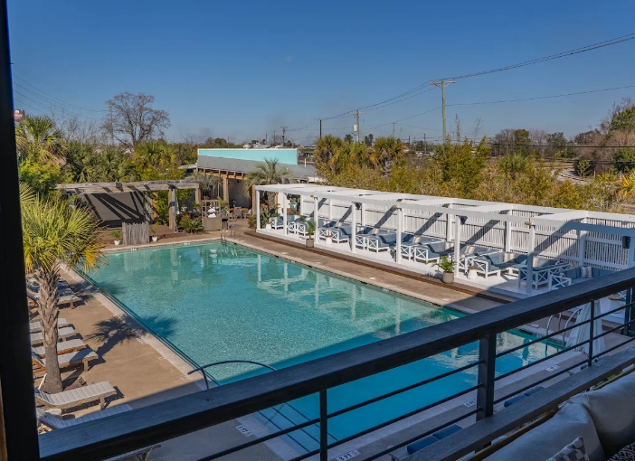
Your local guide to a Charleston SC bachelorette party ideas. Below are our top bachelorette party ideas, from daytime activities to late-night plans, so your crew can book the whole trip in one place. Plan your bachelorette party in Charleston SC with this page.
When To Go
The sweet spots are spring (March–May) and fall (September–November), when Charleston trades summer's heat and humidity for sunny, comfortable days that are perfect for porch drinks and walking tours alike.
Spring: March starts cool and breezy in the upper 60s to low 70s (highs) and mid-40s (lows), warming through April (mid-70s highs, mid-50s lows) into a warm, summery May (low-to-mid 80s highs, low-60s lows).
Fall: September still carries summer warmth, with highs in the mid-80s and lows around 68°F, cooling into October (upper 70s highs, upper 50s lows) and settling into crisp, comfortable November days (upper 60s to 70°F highs, mid-to-upper 40s lows).
Charleston SC Bachelorette Party Activities
From harbor cruises and bar crawls to candle-making and decor setups, here are some of the best bachelorette party ideas to keep the trip interesting.
Shem Creek Sunset Kayak Tour
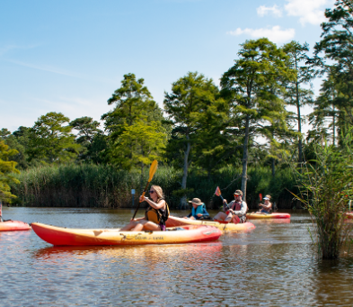
Mt Pleasant, SC
Paddle the saltmarsh at golden hour as the shrimp boats come in — a quieter, more scenic alternative to a booze cruise. The perfect Charleston bachelorette activity.
Shem Creek kayak tour details →
Estimated cost: $45–$65 per person
High Wire Distilling Tour
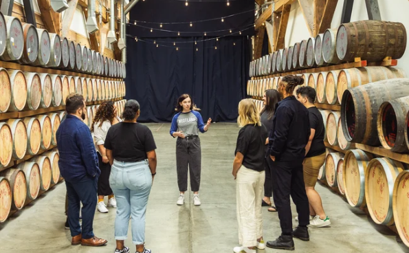
Old Naval Base / NoMo
A guided tasting through Charleston's own small-batch distillery, featuring spirits made from heirloom Southern grains.
High Wire Distilling tour details →
Estimated cost: $10 per person for the tour; tastings and cocktails extra
Michael At Your Place
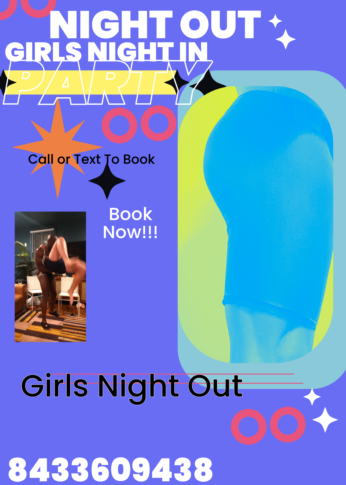
Charleston, Mount Pleasant & the Beaches
Private bachelorette entertainment that comes to your rental, for brunch or late-night shows. As interactive or as hands-off as your group prefers, and last-minute dates are welcome.
Michael At Your Place show details →
Estimated cost: $200 for up to 90 minutes, paid on arrival by cash, Venmo, or Cash App. Call or text 843-360-9438.
Charleston Culinary Walking Tour
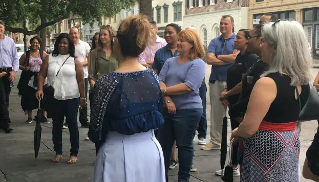
French Quarter
A guided tasting crawl through historic Charleston eateries, with the stories behind the dishes served up alongside them.
Culinary walking tour details →
Estimated cost: $85–$95 per person
Charleston Harbor Resort
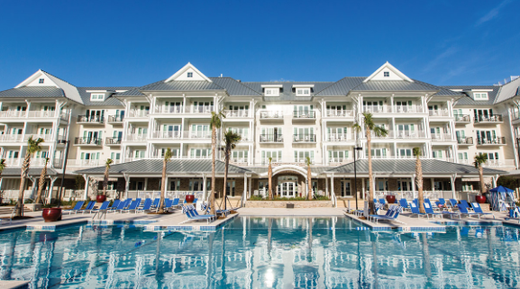
Charleston Harbor
Book the group on a morning or full-day charter boat — the bride will thank you. Boat charters are always popular with bachelorette parties.
Estimated cost: $130–$180 per person, depending on charter length and group size
Charleston Escape Room Challenge
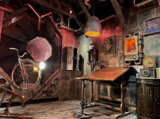
Upper King
A themed hour of puzzle-solving with the crew before the night out — a fun, low-key way to kick off a Friday. This Charleston bachelorette idea involves heavy thinking.
Estimated cost: $30–$40 per person
King Street Shopping
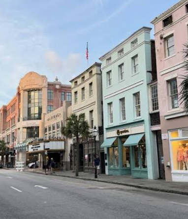
King Street
Stroll down downtown's historic strip for chic local boutiques and retail therapy between the bigger group activities.
Estimated cost: Free to browse — plan $50–$200+ per person if you're buying
Candlefish Candle-Making Class
King Street
Create custom, take-home fragrances at Candlefish — a relaxed, hands-on hour that makes a great favor for the whole group.
Estimated cost: $60 per person
Historic & Ghost Tours
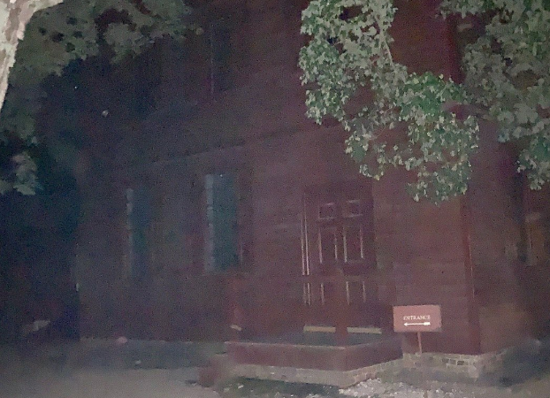
Historic District
Take a private horse-drawn carriage ride by day or an evening ghost tour through the historic district for something a little spookier.
Estimated cost: $35–$50 per person (public tour); $250–$325 per group for a private carriage
Charleston Black Cab Co.
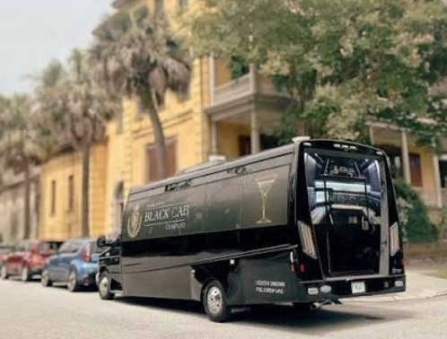
Downtown / Peninsula-wide
Book their signature 5-hour package and let a private driver run your whole day — historic sightseeing, photo stops at Charleston landmarks, and transportation between whatever else is on the itinerary, all in one of their vintage London-style cabs.
Estimated cost: Custom-quoted by group size and stops — request a bachelorette package quote
Pub Tour Charleston
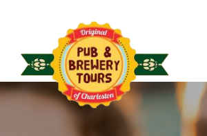
Historic District
A guided walking bar crawl built around tourist groups, weaving through downtown's historic taverns with a local guide who keeps the group moving, the stories coming, and the whole crew together between stops.
Estimated cost: Group rates available — inquire directly for bachelorette packages
Southern Soirée
A Charleston-born party planner and decorator known for custom sugar cookies and thoughtful, personal touches on every setup.
Estimated cost: Packages start around $350, custom-quoted by group size and theme
Bienvenue Charleston
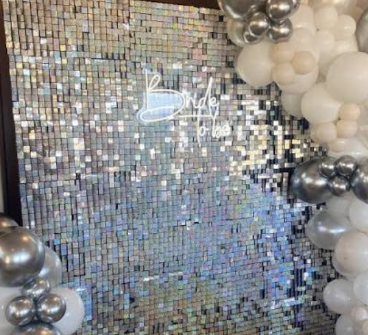
Balloon garlands, Instagram-ready backdrops, and fridge-stocking service so your group can walk into a fully styled house in Charleston.
Bienvenue decor package details →
Estimated cost: Roughly $400–$1,000+ depending on package (comparable to similar local decor services — confirm with a quote)
Book tours and classes 2–3 months ahead for peak spring and fall weekends.
A boat day is one of the most-booked activities in Charleston. Book a private catamaran with Charleston Party Cat, the floating tiki bar from Tiki Tours of Charleston, or a pedal boat with Saltwater Cycle. Every boat, with prices and group sizes, is in our Charleston bachelorette boat charters guide.
A Beach Day for Either Style of Party
Both beaches sit about 25 to 30 minutes from downtown. Folly Beach is the barefoot, laid-back pick for the crew that wants beach bars, live music, and a day that turns into a night out without leaving the island. Isle of Palms is the polished choice, with wide, quieter sand and resort pools that suit a bride who would rather relax with a drink in hand than bar hop.
Where To Eat & Drink
Charleston feeds a bachelorette group well at every hour, from long brunches to oyster towers to a rooftop round before dinner. Start with brunch at Church & Union on North Market Street, set inside a converted 100-year-old church with vaulted ceilings and stained glass. The long tables fit big groups, and the mimosa flight is the move for the bride. For a porch table instead, Poogan's Porch has served the French Quarter since 1976 from an 1891 Victorian house, so ask for the upstairs porch and order the shrimp and grits or the fried chicken and waffles. Iron Rose does a courtyard brunch with live music on weekends inside the historic Mills House, and Basic Kitchen on King Street is the bright, plant-forward pick for easing the crew into day two.
Not every morning needs a reservation. Callie's Hot Little Biscuit on Upper King is a tiny counter with scratch-made biscuits stuffed with pimento cheese, country ham, or hot honey chicken, and ordering ahead on the app skips the line. Sweet Palm Coffee on King Street covers house-made coffees, a breakfast-to-lunch menu, and plenty of sweets, and the chicken Caesar wrap is the best thing on it. For Southern baked goods to bring back to the house, stop at Welton's Tiny Bakeshop before the day's activities start.
Dinner is where the city shows off. Vern's is the hardest table in town to book, a candlelit neighborhood bistro on Bogard Street with a Michelin star, house-made pasta, and a seasonal menu built for sharing, so set an alert for the day reservations open. Around the corner on Coming Street, Chubby Fish takes no reservations and seats about 40, which makes it a better fit for a smaller crew. The line forms before the 5 p.m. opening, so send two people early and let the rest meet you for the daily catch. The Ordinary turns an old bank on Upper King into an oyster hall where the order is a raw bar tower and a bottle of something bubbly, and 167 Raw on King Street is the walk-in pick for oysters, lobster rolls, and tuna burgers. Put the group on the waitlist and shop until the table is ready. For the dressed-up celebration dinner with the whole crew, book Oak Steakhouse in its historic building on Broad Street.
Before dinner, string together a rooftop crawl: Stars Rooftop for 360-degree city views, The Rooftop at Vendue, and The Watch Rooftop Kitchen for harbor views with a drink in hand. Our rooftop bars guide has the full list, and there are more girls night out ideas if the crew wants a second night.
All picks are our own. No restaurant paid to be featured on this list.
Where To Stay
The prime pick is a rental house or Airbnb on the downtown peninsula, such as the historic East Bay rowhouse rentals, where the whole group sleeps under one roof and walks to King Street, brunch, and the bars. Downtown weekends fill fast in spring and fall, so book three months out or more. Plenty of groups stay off the peninsula instead, in Park Circle, Mount Pleasant, or a beach house on Isle of Palms or Folly Beach, and ride in for the night. Our guide on where to stay for a Charleston bachelorette party compares every area by drive time, group size, and what the trip is built around.
Charleston Bachelorette Nightlife
Most nights out start on King Street and end on Calhoun. Dance at Trio or The Commodore, belt it out at The Bangkok Lounge or the dueling pianos at John King Grill, and grab a bottle-service table at Ritual or Republic Reign. Our Charleston bachelorette nightlife guide has every bar and club we send groups to, plus how to start the night at the rental before heading out. All venues are 21+.
Getting Around Charleston
Downtown parking is tight, so skip the rental car and let someone else drive. Lyft and Uber cover short hops between the house, dinner, and the bars, the free DASH shuttle loops the peninsula during the day, and a party bus or limo from Charleston Black Cab Co. keeps a bigger crew together for the night out. Our Charleston bachelorette transportation guide walks through the whole weekend ride by ride, from the airport pickup to the trip home after last call.
More Charleston Party Guides
This guide is part of Party Charleston, our local guide to nightlife and celebrations around the Holy City. Browse our fun things to do on a Charleston girls weekend if this is what you need. Staying across the bridge? Every bookable activity on this page lives in our bachelorette experiences directory.
Planning the night out? Start with the King Street bar crawl, work in a few rooftop bars, and finish with late-night food. The wider Charleston party scene guide covers clubs and lounges, with a separate list for nightlife under 21. For other celebrations, see our party ideas, including girls night out and college parties.